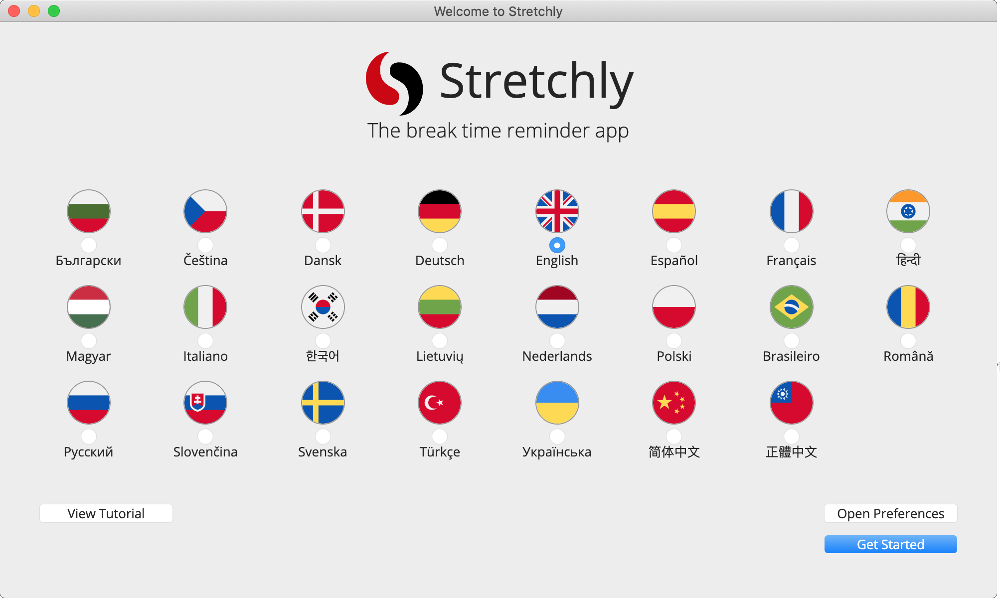
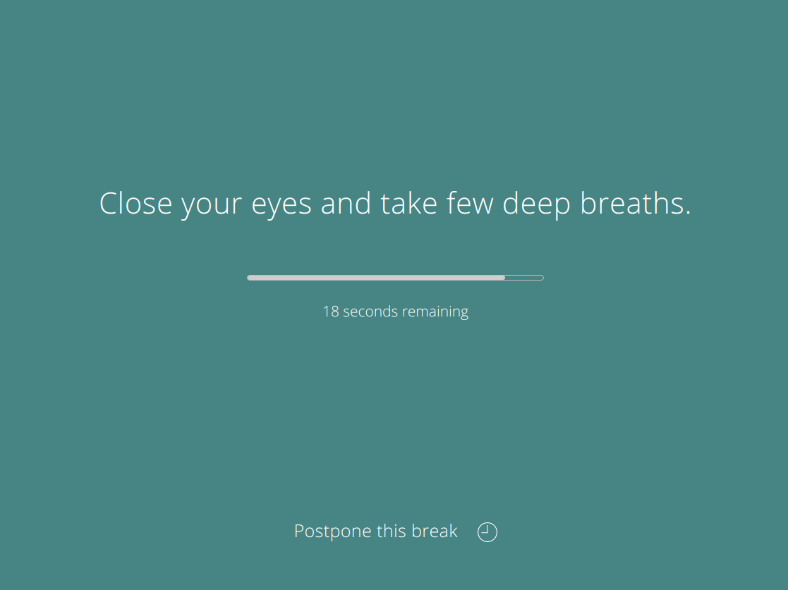
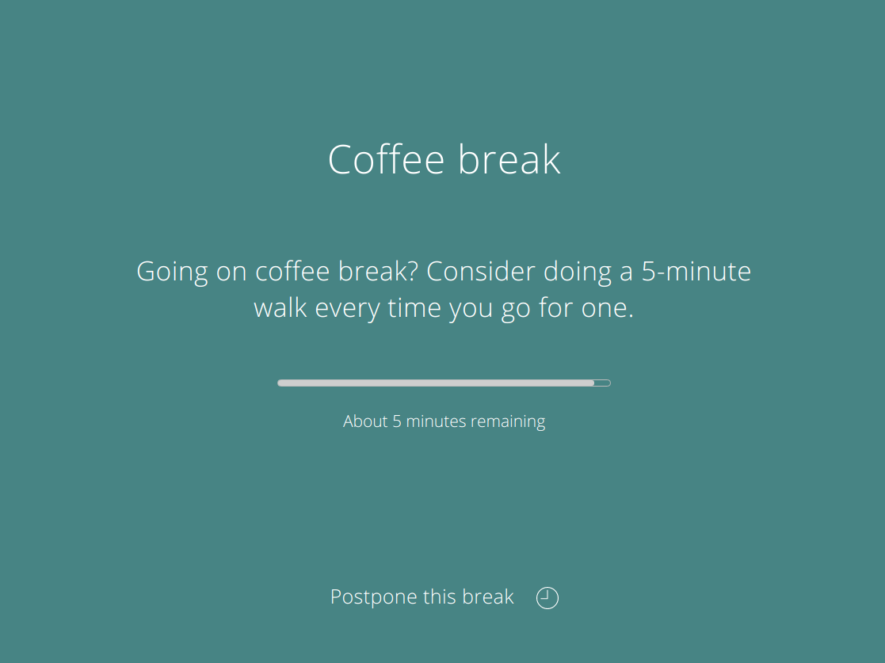
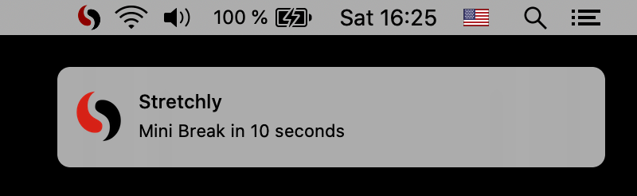
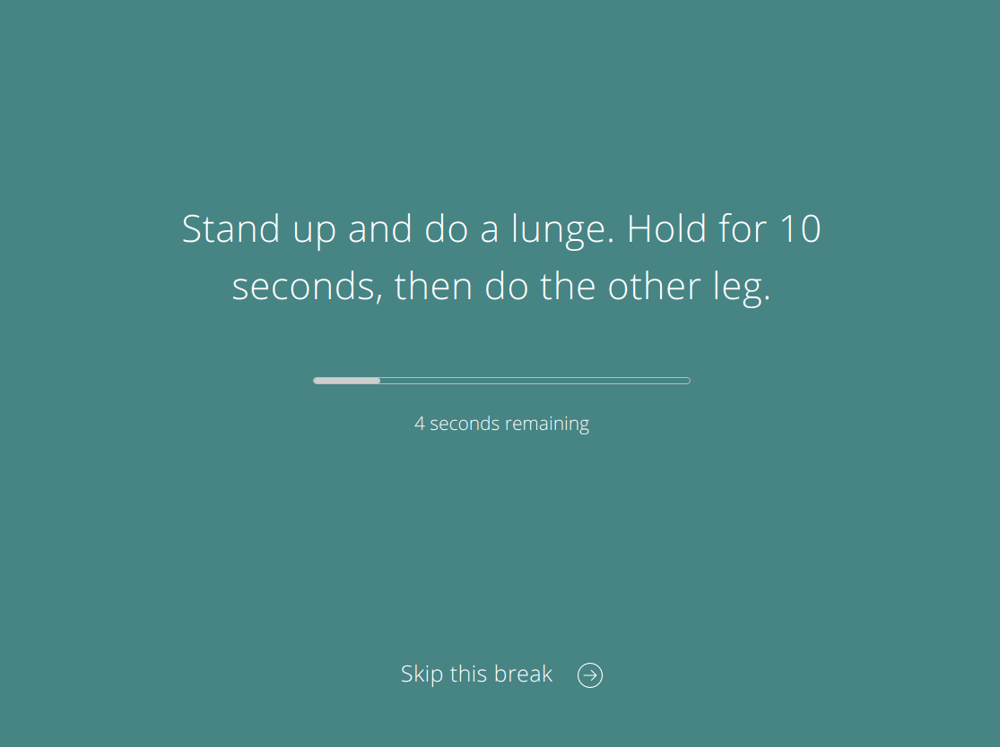
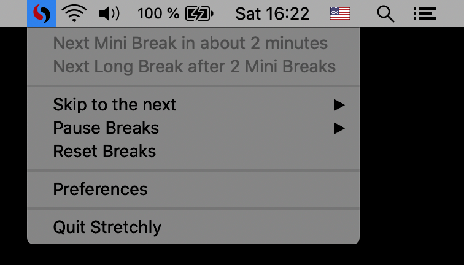
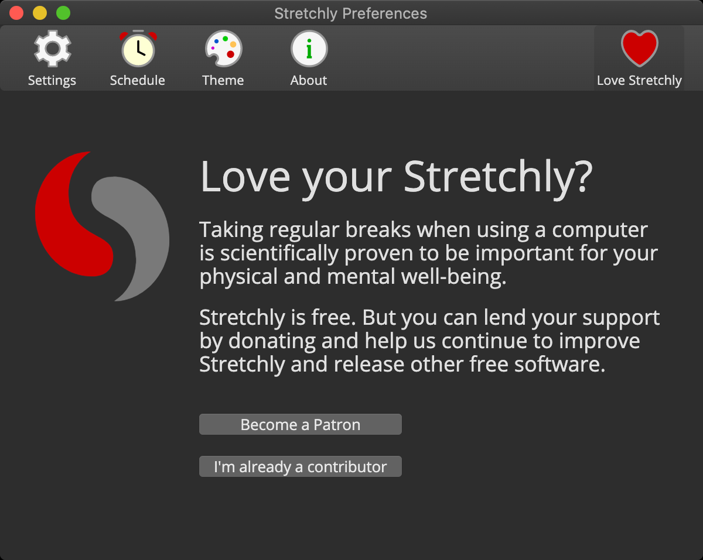
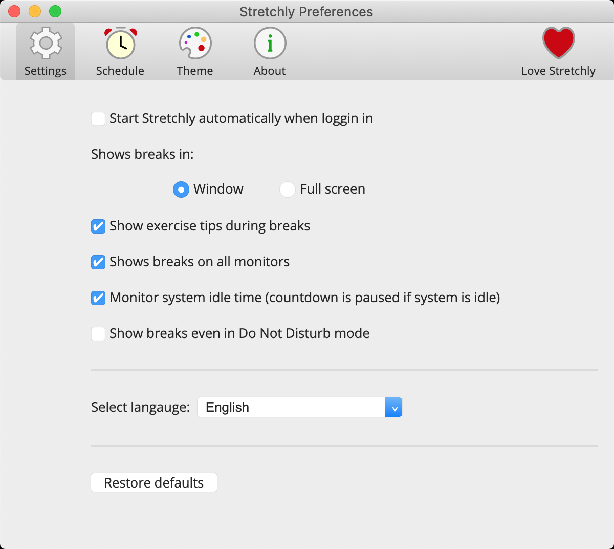
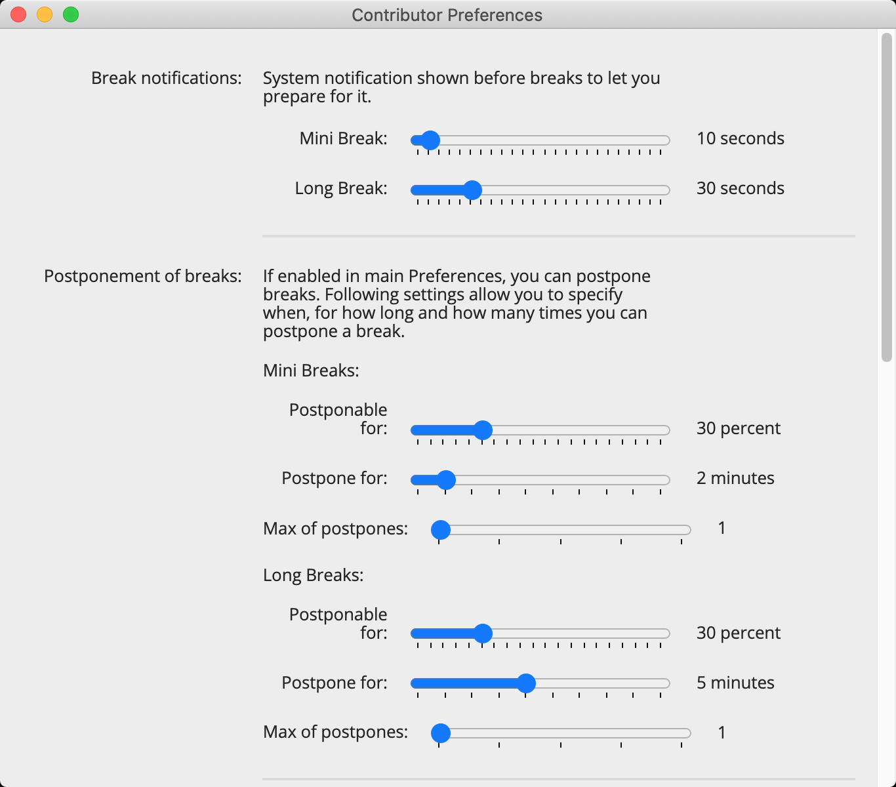

Open-source enthusiast, connecting the dots in Product teams.
CV with contact info
The break time reminder app
Stretchly is a cross-platform open source app that reminds you to take breaks when working on your computer.
Downloads | About | News | Sponsor | Research | Report an issue | Newsletter
When you run Stretchly for the first time, you are presented with a Welcome window that allows you to change the language, review the preferences, view the online tutorial or simply continue with the default preferences.

Stretchly itself lives in your tray, only displaying a reminder window from time to time, which contains an idea for a break.

By default, there is a 20 second Mini Break every 10 minutes and a 5 minute Long Break every 30 minutes (after 2 Mini Breaks).

You'll be notified 10 seconds before a Mini Break (and 30 seconds before a Long Break) so that you can prepare to pause your work.

When a break starts, you can postpone it once for 2 minutes (Mini Breaks) or 5 minutes (Long Breaks). Then, after a specific time interval passes, you can skip the break. Both actions are available by clicking on the link at the bottom of window or by using the Ctrl/Cmd + X keyboard shortcut.

Clicking the Stretchly icon in your tray area will display the current status of breaks, provide menu items with extra functionality, and link to the Preferences.

Stretchly is monitoring your idle time, so when you are idle for 5 minutes, breaks will be paused until you return.
Stretchly is also monitoring Do Not Disturb mode, so breaks are paused when DnD mode is On.
Stretchly follows the theme of your system and is also available in dark mode.

When a Stretchly instance is running, the stretchly command can be use to interact with it from the command line.
Type stretchly help to get a list of all commands and options available as well as some examples.
Most of the preferences can be customized by clicking on the "Preferences" item in the tray menu. (On Windows, to open Preferences, you can also double-click on the tray icon.)

Preferences are divided into multiple categories and you are encouraged to take some time to make Stretchly your own by customizing them.
You can also Restore the defaults to return to the default preferences state.
While the most of the preferences can be edited via the app, some options and values are not available to make the app easy to understand and setup.
All preferences are saved in a JSON file, so you can set Stretchly in the way you need. Use the Ctrl/Cmd + D shortcut while viewing the About section of Preferences, to show debug info and display a clickable link to the preferences file.
It's recommended to Quit Stretchly before editing the preferences file.
To make sure that all works as expected, it's always good idea to check that format of the preferences file is correct, ie. by using jsonformatter.
After you make changes to preferences files, some of the values being shown in Preferences or elsewhere might show incorrect value, as the UI is expecting specific values and is not handling cases where user makes manual changes to preferences file.
Some of the extra preferences are available in Contributor Preferences for Contributors. Those are marked by badge.
Preferences marked with might not work correctly and might break Stretchly. Use at own risk.
Note: Before 1.0, Mini Breaks and Long Breaks were called Microbreaks and Breaks, respectively. To keep the upgrade smooth they still use that name in preferences file and in code.
Here are the preferences editable via the app. If values in the app does not suite your style, you could edit them maually:
microbreakDuration - duration of Mini Break (ms)microbreakInterval - interval of Mini Break (ms)breakDuration - duration of Long Break (ms)breakInterval - interval of Long Break (Mini Breaks)breakNotification - show notification before Mini BreakmicrobreakNotification - show notification before Long Breakmicrobreak - enable Mini Breaksbreak - enable Long BreaksmicrobreakStrictMode - enable strict mode for Mini BreaksbreakStrictMode - enable strict mode for Long BreaksmainColor - theme color code (for Long Breaks),miniBreakColor - theme color code (for Mini Breaks),transparentMode - show break windows as transparentaudio - sound theme name (for Long Breaks)miniBreakAudio - sound theme name (for Mini Breaks)fullscreen - show breaks in fullscreen modeideas - show break ideasnaturalBreaks - monitor idle timeallScreens - show breaks on all screenslanguage - languageuseMonochromeTrayIcon - use monochrome iconuseMonochromeInvertedTrayIcon - use inverted monochrome iconsilentNotifications - enable soundsmonitorDnd - monitor DND modecheckNewVersion - check for new versionsIn the preferences file, change useIdeasFromSettings: false, to useIdeasFromSettings: true, and edit breakIdeas and microbreakIdeas.
Note that when a new Stretchly version with new break ideas is out, your custom ideas will not be overwritten. You can reset break ideas to the latest defaults when you "Restore defaults" from Preferences window.
In the preferences file, change breakNotificationInterval: 30000, to whatever value you want. 30000 is 30 seconds. Same goes for Mini Breaks.
In the preferences file you can set the morningHour setting to pause until that hour today or the next day
Otherwise, you can set morningHour: "sunrise" and set posLatitude, posLongitude in
preferences to pause until the actual sunrise in your area.
E.g. if you live in Boston you would set:
morningHour: "sunrise",
posLatitude: 42.3,
posLongitude: 71
In the preferences file, you can edit microbreakPostpone and breakPostpone to enable or disable the ability to postpone breaks, microbreakPostponeTime and breakPostponeTime to change the postpone time in milliseconds, microbreakPostponesLimit and breakPostponesLimit to change the number of allowed postpones per break, and finally, microbreakPostponableDurationPercent and breakPostponableDurationPercent to change the percentage of the break during which the user can postpone it.
In the preferences file, set notifyNewVersion: false, to disable new version notification.
In the preferences file, set microbreakStartSoundPlaying: true, to start a Mini Break with a sound (The same sound will be played as at the end of the break). Same for breakStartSoundPlaying.
To play different sound for Mini Breaks, set miniBreakAudio to desired value (crystal-glass, silence, tic-toc, wind-chime).
To have different theme for Mini Breaks, set miniBreakColor to desired value, ie #123456.
In the preferences file, set naturalBreaksInactivityResetTime to your preferred value (in milliseconds greater than than 20000ms). This is an idle time length, after which Stretchly timers will be cleared and will stay at 0 until the user resumes activity.
In the preferences file, set volume to your preferred value. Default value is 1, which is 100% volume. Set it, for example, to 0.61 for 61% volume.
In the preferences file, set endBreakShortcut to your preferred value. We do not validate this input, so please check Electron's documentation for available values for key and modifier. When a given accelerator is already taken by other applications, this call will silently fail. This behavior is intended by operating systems, since they don't want applications to fight for global shortcuts.
If you'd like to disable the shortcut, set value to empty string "".
Default value is CmdOrCtrl+X.
Toggling between Pause Breaks and running breaks.
In the preferences file, set pauseBreaksToggleShortcut to your preferred value. We do not validate this input, so please check Electron's documentation for available values for key and modifier. When a given accelerator is already taken by other applications, this call will silently fail. This behavior is intended by operating systems, since they don't want applications to fight for global shortcuts.
In the preferences file, set skipToNextScheduledBreakShortcut, skipToNextMiniBreakShortcut, skipToNextLongBreakShortcut to your preferred value. We do not validate this input, so please check Electron's documentation for available values for key and modifier. When a given accelerator is already taken by other applications, this call will silently fail. This behavior is intended by operating systems, since they don't want applications to fight for global shortcuts.
If you'd like to disable the shortcut, set value to empty string "". That's the default value as well.
In the preferences file, set resetBreaksShortcut to your preferred value. We do not validate this input, so please check Electron's documentation for available values for key and modifier. When a given accelerator is already taken by other applications, this call will silently fail. This behavior is intended by operating systems, since they don't want applications to fight for global shortcuts.
If you'd like to disable the shortcut, set value to empty string "". That's the default value as well.
In the preferences file, change themeSource: 'system' to either 'light' or 'dark' to always use the specified theme.
In the preferences file, change mainColor to whatever color you like.
To show the Welcome window again on the next start, change "isFirstRun" to true.
To specify how solid the break window should be when Theme transparency is enabled, set the value of opacity from 0 to 1 (which is in turn 0 to 100%).
To specify the size of the break window, set the value of breakWindowHeight and breakWindowWidth from 0 to 0.99 (which is in turn 0 to 99% of the size of the screen). Don't set 100% as that's fullscreen.
If you want Stretchly breaks to act as regular windows (have a titlebar, turn off always on top, be minimizable and focusable) set showBreaksAsRegularWindows to true.
By editing appExclusions in preferences file, you can automatically control when Stretchly breaks are paused.
If you want Stretchly to be paused when specific apps are running, you could have this value (breaks are paused when Skype or Atom are running):
"appExclusions": [
{
"rule": "pause",
"active": true,
"commands": [
"/usr/share/skypeforlinux/skypeforlinux",
"atom"
]
}
]
If you want Stretchly to be running when specific apps are as well, you could have this value (breaks are paused when Skype or Atom are not running):
"appExclusions": [
{
"rule": "resume",
"active": true,
"commands": [
"/usr/share/skypeforlinux/skypeforlinux",
"atom"
]
}
]
You can specify multiple values, (as appExclusions is array) and Stretchly will take the first one that is marked as "active": true. Multiple commands can be specified as well. Commands should be case sensitive, but seems like this is not consistent across platforms. Therefore, sometimes, going all lowercase might be needed (this was noticed on Windows).
You can also specify appExclusionsCheckInterval in milliseconds: lower number means more often checks, but also higher CPU usage. Default value is 1000 which is 1 second.
If you don't want to reset breaks once system is back from Suspend/Lock, set pauseForSuspendOrLock to false.
In case you have disabled showing of breaks on all monitors, you can specify which one should contain the break window. Set screen value to one of the following:
"primary" - primary monitor as given by OS"cursor" - monitor where there is cursor"0" (or 0), "1", "2" etc, where "0" is the first monitor returned by OS and so forthIf you want Stretchly to show time to the next break in menubar icon set timeToBreakInTray to true.
To show current time in breaks, set the value of currentTimeInBreaks from false to true.
To hide Stretchly icon in menubar/tray, set the value of showTrayIcon from true to false.
Note that this will disable graphical way of opening Stretchly Preferences. To access Preferences, you will have to use command line options (ie: stretchly preferences on Linux).
Stretchly is free but you can support it by contributing code, translations or money. You will be rewarded by getting access to Contributor Preferences, ability to Sync Preferences, chat on Discord and more!
You can access contributor features after authenticating with Github or Patreon in the "Love Stretchly" section of Preferences.


GitHub Sponsors does not charge any fees for sponsorships from user accounts, so 100% of these sponsorships go to the sponsored developer or organization. Github Sponsors Matching Fund will also match every donation.
You will be able to access Contributor Preferences, Sync Preferences.
You won't be able to chat on Discord.

Patreon has fees plus it uses PayPal, which has its fees as well.
You will be able to access Contributor Preferences, Sync Preferences and Discord chat.

3EyJNtJPuQjfqP5czN88kPySwxVjv7h42y

0x377f05E76e96EC4C19fF225e767FeD77b1750294

t1XyjwJtViEqATUnPKG6mdUwN4TkoCfxzcM
Let me know if you would like to use some other currency.
Currently, there are no rewards for donating with Crypto currencies, as we can't programmatically match them.

PayPal has fees.
Currently, there are no rewards for donating via PayPal, as we can't programmatically match them.
By contributing code (or translations), you will be able to access Contributor Preferences, Sync Preferences.
You won't be able to chat on Discord.
Feel free to join in the development of this app via Issues and Pull Requests.
Before implementing a feature, please open an Issue first, so we can be sure that no one else is working on it and that the changes will be accepted. It is important do discuss changes before implementing them (Why should we add it? How should it work? How should it look? Where will it be? …).
package.json)
Now you can clone the repo with git clone https://github.com/hovancik/stretchly.git. Change to the new created directory and run npm i to install node packages needed.
Read on.
You can use Stretchly's built-in debug shortcut by pressing Ctrl/Cmd + D in the About section to show information such as:
You can copy debug information to the clipboard.
If you start Stretchly in development mode with the npm run dev command, it makes it possible to debug the application in your browser on http://localhost:9222.
Stretchly uses [log](https://github.com/megahertz/electron-log) package for some extra logging.
Format as following:
System: my message for messages regarding Operating System, ie: System: resume or unlockStretchly: my message for messages regarding StretchlyYou can help to translate Stretchly on Weblate. Consider joining with your Github account to be correctly credited.

Also see Github's list of contributors.
1.0 Icon and UI design by Colin Shanley (www.colinshanley.com)
Sounds used in this application are listed here.
crystal glass by mlteenie, available under the Attribution License.wind chime by GnoteSoundz, available under the Creative Commons 0 License.tic toc by magundah14, available under the Creative Commons 0 License.silence by parcodeisuoni, available under the Attribution License.reverie by Seemant Chandra (instagram: piyush.x_x)This app uses Noto Sans fonts licensed under the Apache License, Version 2.0.
See LICENSE file.